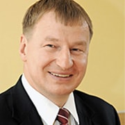
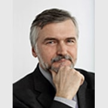
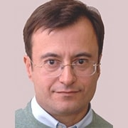
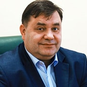
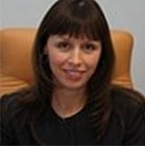

Эксперты

Гачман В.В.
вице-президент Союза зернопереработчиков Алтая, генеральный директор АО «Грана»

Клепач А.Н.
заместитель председателя Внешэкономбанка, член правления

Рылько Д.Н.
генеральный директор Института конъюнктуры аграрного рынка
-

Беньковский В.Б.
вице-президент Российской Гильдии Пекарей и Кондитеров, Президент НП «Алтайская Гильдия хлебопеков и кондитеров»
-
Гавриленков Е.Е.
профессор, заведующий кафедрой прикладной макроэкономики НИУ-ВШЭ
-
Давитаиа Виктория
директор по работе с клиентами GfK Rus
-

Друзяка А.Е.
член совета директоров группы компаний «Зерно.UA»
-

Королева Ю.М.
директор ФГБУ «Центр оценки качества зерна»
-
Маслов А.А.
доктор исторических наук, профессор, Руководитель Школы востоковедения НИУ-ВШЭ
-
Хоффман Дарон
директор по экономике ООО «КОФКО Ресорсиз»
-
Королева Ю.М.
директор ФГБУ «Центр оценки качества зерна»
-
Друзяка А.Е.
член совета директоров группы компаний «Зерно.UA»